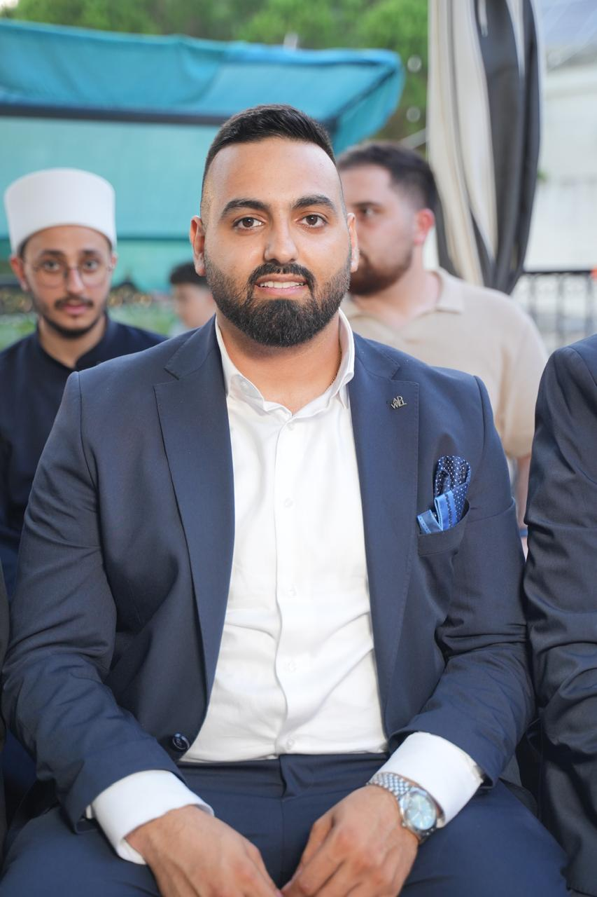

From data chaos to business clarity — end-to-end LLM systems, RAG pipelines, and multi-agent architectures, taken all the way from ingestion to deployment.

“Without data, you're just another person with an opinion.” — W. Edwards Deming
From messy data to a URL you can visit. That's the job.
I'm an AI Engineer who builds LLM, RAG, agentic AI, and recommendation systems end-to-end: data preparation, retrieval, orchestration, and deployment. The proof runs live on this page. My AI Investment Agent is a working product with a public API, Currently I'm building a hybrid recommendation system that serves real users.
I work in Python across vector search, hybrid retrieval, prompt engineering, and machine learning, and I've applied that toolkit to investment research, travel planning, resume screening, and predictive modeling. Every project was built under real constraints: latency, cost, and reliability.
The field moves fast and I move with it. Whatever I learn, I put into a system that ships, because a technique I can't deploy is a technique I don't know yet.
Before engineering, I worked in sales. It shows in everything I build: I design systems around the business problem, and I can explain the architecture to a CTO or a client without hiding behind jargon.
I'm open to AI Engineering and Applied GenAI roles. If you want someone who ships, scroll down.
A market research intelligence system for gold and silver. It ingests financial news from multiple sources, retrieves the most relevant articles with semantic search, classifies each one across market drivers (rates, inflation, geopolitics, USD), computes a directional market bias programmatically — before any LLM involvement — and returns a structured, evidence-backed answer with citations.
An end-to-end agentic AI system that generates personalized travel itineraries using multi-agent orchestration, deployed as a cloud-ready web application.
A Retrieval-Augmented Generation system that helps recruiters discover the most relevant resumes using semantic search.
A CNN-based deep learning model for medical image classification using chest X-rays.
Detecting anomalous transactions using unsupervised learning on highly imbalanced datasets.
A supervised ML project predicting survival probabilities using structured passenger data.
I'm always open to AI engineering, machine learning, and generative AI opportunities.